2026-11-19 実行。目標：車体固定ROIの SSIM ≥0.85、PSNR ≥20 dB。輪郭IoUは採否に使いません。
| 評価対象 | PSNR | SSIM | 判定 |
|---|---|---|---|
| 元画像240×180・学習参照 | 23.80 dB | 0.909 | 達成（学習画像への適合） |
| 未使用12視点1160×652 | 17.87 dB | 0.714 | 未達・総合採用は拒否 |
前回は元画像11.72 dB / 0.327、未使用12視点12.02 dB / 0.452でした。旧モデルの実レンダーと比較できます。
公式36方向中24枚からSIFT/COLMAPで透視カメラと疎な3D点を推定し、512段階の車体占有格子から固定3D表面を作成。24枚と元画像を、その表面へ投影する視線依存マテリアルとしてBlender/Cyclesで描画しました。元画像の位置は48個の特徴点インライアで推定。24カメラの平均再投影誤差は0.798 pxです。
写真を使った外観再現です。 元画像も学習に含めたため、その高得点だけで未知視点への再現性や精密CADを証明できません。物理的な材質・反射率の復元ではありません。画像を後から変形・位置合わせして採点していません。
PSNR 23.80 dB / SSIM 0.909
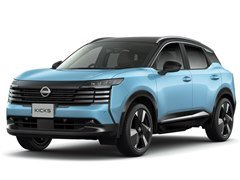
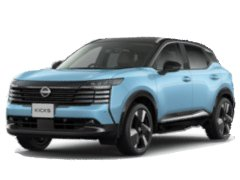
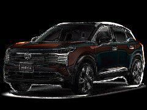
PSNR 15.67 dB / SSIM 0.654
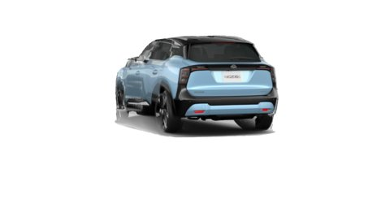
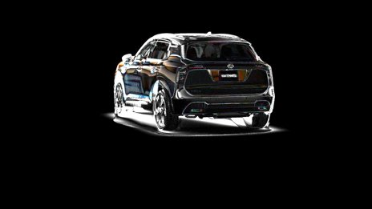
PSNR 20.11 dB / SSIM 0.776
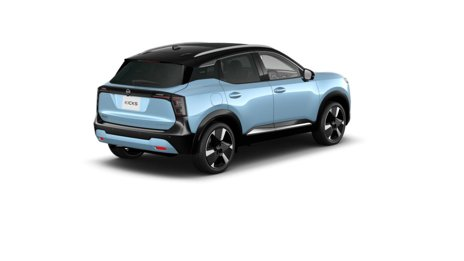
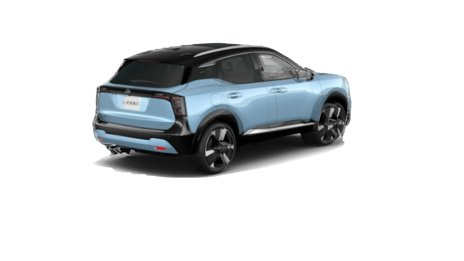
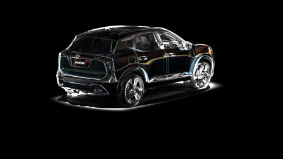
PSNR 20.59 dB / SSIM 0.783
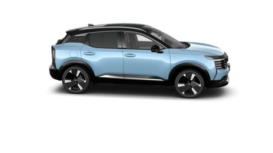
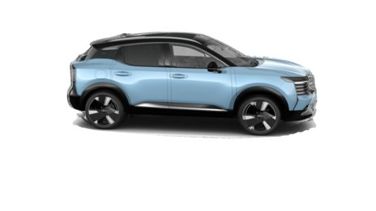
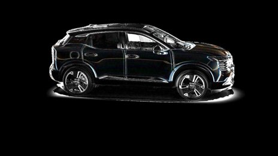
車体の評価枠は参照写真のみで決定し、旧版と同じ image_metrics.py で計測。元の解像度でRGBを比較し、透過PNGを白に合成。SSIMはGaussian σ1.5、11×11、RGB、data_range=1。PSNRは領域内MSEから算出。12視点はMSEを画素数で集計したPSNRと視点平均SSIMを表示します。白背景全体の指標、車体のみ、和集合もJSONに併記します。
未使用フレームは3,6,…,36。写真をSfM・表面・マテリアルに使用せず、学習カメラの回転SLERPとカメラ空間並進の線形補間で予測。これは事前固定分割の再評価であり、改善過程で結果を確認したため完全な未知データでの最終保証ではありません。
| フレーム | PSNR dB | SSIM |
|---|---|---|
| input | 23.80 | 0.909 |
| 3 | 16.98 | 0.727 |
| 6 | 17.73 | 0.751 |
| 9 | 18.27 | 0.766 |
| 12 | 15.67 | 0.654 |
| 15 | 15.40 | 0.679 |
| 18 | 20.11 | 0.776 |
| 21 | 18.44 | 0.664 |
| 24 | 20.59 | 0.783 |
| 27 | 20.54 | 0.754 |
| 30 | 17.29 | 0.672 |
| 33 | 16.68 | 0.696 |
| 36 | 17.06 | 0.649 |
カメラ中心の独立補間は投影ずれが大きく、学習視点のleave-one-out投影検査を根拠に並進補間へ変更しました。学習写真間の光学フローから奥行きを推定したPoisson表面も試しましたが、元画像17.33 dB / 0.847へ悪化したため不採用。未使用写真の特徴点でカメラだけを推定する別診断は18.22 dB / 0.735で、上の盲検評価には混ぜていません。